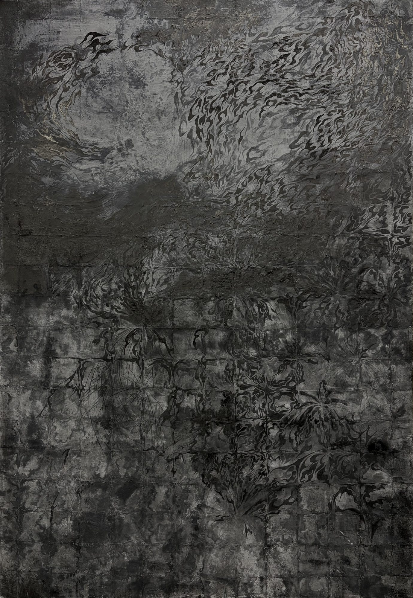

윙윙윙_Buzz Buzz Buzz
- 연도Year
- 2026
- 재료Material
- 석고 붕대, 석고, 먹
- 크기Size
- 162.3×112.5cm
- 시리즈Series
- 석고붕대·먹Plaster Bandage & Ink
〈윙윙윙〉은 격자로 재단한 석고 붕대 위에 먹과 석고를 번갈아 쌓아 올린 부조 회화다. 석고 붕대를 올려 손으로 문지르고, 먹으로 색을 깔고, 다시 석고 가루를 손으로 문질러 덮는 일을 수없이 되풀이한 화면에는 전쟁과 축제의 장면, 흐려진 흔적과 새로 그은 선이 서로를 밀어내지 않은 채 함께 놓여 있다. 이 작업은 서로 다른 것들이 어긋났다가 다시 맞춰지며 하나의 세계를 이루어 가는 모습, 곧 내가 사회 속에서 발견한 결맞음을 손의 흔적으로 기록한 것이다.
1. 출발점: 전쟁과 축제가 함께 있는 세계
어른이 된 나는 전쟁이 터지자 방산 수혜주를 매수하는 사람들을 보게 되었다. 전쟁 속에서 누군가는 돈을 벌고, 누군가는 정치적 입지를 다진다. 세계 어딘가에서 전쟁이 일어날 때마다 금융시장은 요동치고, 누군가의 비극은 다른 누군가의 이익이 된다. 먼 곳에서 일어난 사건이 시장과 정치를 거쳐 우리 손안의 화면 속 숫자로까지 번져 오는 것이다. 그러나 같은 세계에서 누군가는 다친 이를 돌보고, 서로의 손을 잡고, 축제를 연다. 전쟁과 축제, 상실과 회복은 정반대의 사건처럼 보이지만 현실에서는 같은 시간 위에 나란히 놓여 있고, 끊어지지 않은 채 서로에게 영향을 미친다. 나는 이 모순된 장면들이 어떻게 한 세계 안에 함께 있을 수 있는지 묻고 싶었다.
2. 관점: 결맞음으로 바라본 사회
물리학에서 결맞음은 여러 파동이 서로 박자를 맞춘 채 함께 출렁이는 상태라고 한다. 박자가 맞아 있는 동안 파동들은 겹치면서 서로를 키우거나 지워 또렷한 무늬를 그리지만, 바깥 세계와 닿고 뒤섞이면서 그 박자는 흐트러진다. 그렇다고 맞춰져 있던 박자가 아주 없어지는 것은 아니고, 주변 곳곳으로 흩어져 남는다고 한다.
나는 이 이야기를 사회를 바라보는 눈으로 옮겨 보았다. 사회도 수많은 사람과 사건이 서로 박자를 맞추며 이어질 때 하나의 세계로 유지된다. 평소에는 잘 보이지 않는 그 박자가 전쟁 같은 큰 사건 앞에서는 한순간에 크게 어긋난다. 그러나 어긋난 자리에서도 사람들은 서로를 돌보고 연대하며 다시 박자를 맞춰 간다. 지나간 사건은 깨끗이 지워지지 않고 사람들의 기억과 삶 곳곳에 흩어져 남아, 다음에 맞춰질 박자의 바탕이 된다. 내게 결맞음은 완성된 질서가 아니라, 어긋남과 맞춤이 끝없이 되풀이되는 과정이다.
3. 화면의 구조: 연결된 세계로서의 격자, 사건의 흔적으로서의 먹
격자로 재단한 석고 붕대의 네트망은 서로 연결된 세계이자, 인간이 자연 위에 세운 사회의 구조를 상징한다. 화면 위의 모든 흔적은 이 망 위에서 생겨나 망을 따라 번져 간다. 한 칸에서 일어난 일은 옆 칸으로, 다시 그 옆 칸으로 스며든다. 석고 붕대가 본래 다친 몸을 감싸 굳혀 낫게 하는 재료라는 점에서, 이 망은 상처와 회복을 함께 품고 있기도 하다.
그 위를 가로지르는 먹의 형상은 하나의 장면으로 고정되지 않는다. 화면 위쪽에서 불길처럼 일렁이며 휘도는 형상은 미사일의 궤적처럼, 가운데를 가로지르는 짙은 먹의 띠는 폭격 뒤 피어오르는 연기처럼 보인다. 그러나 아래쪽에서 한 점으로부터 사방으로 터져 나가는 형상들은 폭발이면서 동시에 축제의 밤하늘을 수놓는 불꽃이다. 무엇으로 보일지는 보는 이의 기억과 시선에 달려 있다. 제목 ‘윙윙윙’ 역시 머리 위를 지나는 드론과 미사일의 소리이자 축제의 밤을 채우는 사람들의 웅성거림이다. 전혀 다른 두 장면이 하나의 소리로 겹쳐 울린다.
4. 과정: 흐려지고, 스며들고, 다시 떠오르는 층
작업은 격자로 재단한 석고 붕대를 화면에 올리는 데서 시작한다. 그 위에 먹으로 색을 깔고, 다시 석고 가루를 바른 뒤, 먹으로 형상을 그린다. 석고 위에 그린 먹은 선명함이 오래가지 않는다. 시간이 지나면 석고의 물성이 표면으로 서서히 올라오며 먹빛이 점점 옅어진다. 그러나 흔적은 완전히 사라지지 않고 석고 속에 스며 남는다. 흐려진 먹 위에 다시 먹을 올리면 전보다 선명한 흔적이 생기고, 먹 위에 석고 가루를 덧입히면 묻혀 있던 형상이 은은하게 떠오른다. 석고는 물과 가루의 비율에 따라 단단함이 달라져 층과 층을 붙여 잇기도 하고 나누기도 한다. 나는 이 과정을 화면의 부분마다 순서와 재료의 양을 달리하며 되풀이했고, 그 결과 서로 다른 시간과 농도, 선명함과 희미함이 한 화면 안에 겹겹이 함께 있게 되었다.
각각의 층은 따로 떨어진 그림이 아니다. 희미해진 먹은 지나간 사건의 흔적이면서 다음 먹선이 얼마나 선명할지를 정하는 바탕이 되고, 새로 그은 선은 이전 층과 떨어지지 않은 채 하나의 화면을 이룬다. 어긋나고, 스며들고, 다시 맞춰지는 이 되풀이는 내가 바라본 사회의 모습과 닮아 있다.
5. 문지르는 손: 세계와 맞닿은 한 사회 구성원으로서
이 모든 과정의 중심에는 손이 있다. 석고 붕대를 올릴 때도, 석고를 바를 때도 나는 손바닥과 손가락으로 표면을 직접 문지른다. 석고는 손의 압력과 움직임을 따라 격자의 틈으로 밀려 들어가고, 손이 지나간 자리마다 힘의 세기와 방향, 머문 시간이 결이 되어 남는다. 손길에 따라 아래층의 먹빛은 흐려지기도 하고, 오히려 표면 위로 끌려 올라오기도 한다.
나에게 문지름은 이 시대를 살아가는 한 사회 구성원으로서 세계에 손을 대는 일이다. 우리는 손안의 화면으로 먼 곳의 전쟁을 지켜보고, 그 소식에 반응하고, 무언가를 사고팔고, 누군가를 돕는다. 그 작은 행위들은 보이지 않는 길을 따라 세계와 이어져 있어서, 누구도 이 연결의 바깥에 서 있을 수 없다. 화면을 문지르는 내 손도 마찬가지다. 손이 닿는 순간 아래층의 흔적은 흐트러지고 섞이지만, 바로 그 접촉이 층과 층을 이어 붙이고 다음 층이 자리 잡을 바탕을 만든다. 파동의 박자를 흐트러뜨리는 것이 바깥 세계와의 접촉이듯, 내 손은 화면을 밖에서 내려다보는 관찰자의 손이 아니라 그 세계 안에서 영향을 주고받는 한 사람의 손이다. 그리고 문지르는 손은 흔적을 지우는 손이면서, 아픈 배를 문질러 주던 ‘약손’처럼 상처를 어루만지는 손이기도 하다. 한 번의 손길 안에 지움과 돌봄이 함께 있다.
6. 감상: 실물 앞에서 드러나는 깊이
가까이 다가가면 격자의 요철과 석고 입자의 결, 손이 밀고 지나간 자국, 석고 아래 가라앉은 먹의 층이 하나하나 드러난다. 한 걸음 물러서면 그 흔적들이 하나의 흐름으로 결을 맞춘다. 빛이 닿는 각도와 보는 이의 위치에 따라 숨어 있던 층이 떠오르기도 한다. 사진으로는 다 담기지 않는 이 깊이는 실물 앞에서 비로소 온전히 드러난다.
7. 맺으며: 반복되는 역사, 이어지는 연대
화면이 새로워질수록 전쟁은 끝나지 않고 반복되며, 치유와 연대 역시 반복된다. 하나의 사건은 다른 사건을 완전히 지우지 못하고, 서로 다른 시간과 기억, 가치는 하나의 세계 안에 쌓여 관계를 맺는다. 나는 그 세계의 바깥이 아니라 안에서, 손으로 그 결을 더듬고 문지르며 이 화면을 만들었다. 〈윙윙윙〉은 대립하는 가치들이 서로를 지우지 않고 관계를 이어 가며 공존하는 세계, 그리고 그 관계가 또 다른 가능성을 낳는 세계를 드러내고자 한다.
<Buzz Buzz Buzz> is a sculptural painting built up from alternating layers of meok (Korean ink) and plaster on plaster bandage cut into a grid. Laying down the bandage and rubbing it in by hand, washing it with ink, then rubbing plaster powder over it again by hand—repeated countless times, this process has left a surface where scenes of war and festival, faded traces and freshly drawn lines, sit together without pushing one another out. The work is a record, made with my own hands, of what I have found to be coherence in society: different things falling out of step and coming back into step, and in doing so forming a single world.
1. Starting point: a world where war and festival exist side by side
As an adult, I watched people buy defense stocks as soon as a war broke out. In war, some make money while others strengthen their political standing. Every time a war erupts somewhere in the world, financial markets shake, and one person’s tragedy becomes another’s profit. An event in a faraway place travels through markets and politics until it reaches the numbers on the screens we hold in our hands. Yet in that same world, people care for the wounded, hold each other’s hands and throw festivals. War and festival, loss and recovery, look like opposites, but in reality they lie side by side on the same timeline, never fully separate, always affecting one another. I wanted to ask how such contradictory scenes can exist together in one world.
2. Perspective: society through the lens of coherence
In physics, as I have learned, coherence is the state in which many waves move together while keeping in step with one another. As long as they stay in step, the waves overlap—strengthening or cancelling each other—and draw a clear pattern. But as they touch and mingle with the world around them, they fall out of step. Even then, the step they once shared does not simply vanish; it is scattered into their surroundings.
I carried this picture over to the way I look at society. A society, too, holds together as one world while countless people and events keep in step with one another. That rhythm usually goes unnoticed, but in the face of something as large as war, it is suddenly thrown badly out of step. Yet even where the rhythm breaks, people care for one another, stand together and find their step again. Past events are never cleanly erased; they remain scattered through people’s memories and lives, and become the ground on which the next rhythm is found. To me, coherence is not a finished order but a process in which falling out of step and coming back into step repeat without end.
3. The structure of the surface: the grid as a connected world, ink as the traces of events
The mesh of plaster bandage cut into a grid stands for an interconnected world—the structure of society that humans have built upon nature. Every trace on the surface arises on this net and spreads along it; what happens in one square seeps into the next, and then into the one beyond. Plaster bandage is also, originally, a material for wrapping and setting an injured body so that it can heal, so this net holds both injury and recovery.
The ink forms that cross the grid never settle into a single scene. In the upper part, flame-like forms surge and swirl like missile trajectories; through the middle, a dense band of ink spreads like smoke rising after a bombing. Yet below, forms bursting outward from a single point are explosions and, at the same time, fireworks lighting up a festival night. What one sees depends on one’s own memory and gaze. The title, too, is both the sound of drones and missiles passing overhead and the buzz of a crowd on a festival night—two entirely different scenes resonating in a single sound.
4. Process: layers that fade, seep in and resurface
The work begins with laying the grid of plaster bandage onto the surface. Over it I lay down a wash of ink, apply plaster powder again, and then draw forms in ink. Ink drawn on plaster does not stay vivid for long; over time, the plaster slowly rises to the surface and the ink grows paler. Yet the trace never disappears completely—it seeps into the plaster and remains. Ink applied over a faded mark leaves a trace sharper than before, while plaster powder layered over ink lets buried forms surface softly. Depending on the ratio of water to powder, the plaster sets with different strength, at times binding the layers together and at times holding them apart. I repeated this process in a different order and with different amounts of material in each area of the surface, until different moments and densities, clarity and blur, came to coexist layer upon layer.
No layer is a separate picture. Faded ink is the trace of a past event and, at the same time, the ground that decides how vivid the next line will be; each new line remains joined to the layers beneath it, forming a single surface. This cycle of falling out of step, seeping in and coming back into step resembles the society I have observed.
5. The rubbing hand: a member of society in contact with the world
At the center of all this is the hand. When laying the plaster bandage and when applying the plaster, I rub the surface directly with my palms and fingers. The plaster is pushed into the gaps of the grid by the pressure and movement of my hand, and wherever the hand passes, the strength, direction and duration of its touch remain as grain. Under my hand, the ink in the layers below sometimes blurs and sometimes is drawn back up to the surface.
To me, rubbing is the act of laying a hand on the world as a member of contemporary society. We watch distant wars on the screens in our hands, react to the news, buy and sell, and help someone. These small acts are connected to the world along invisible paths, and no one can stand outside these connections. My hand rubbing the surface is no different. The moment it touches, the traces below are disturbed and mixed—yet that very contact joins layer to layer and prepares the ground for the next. Just as waves are thrown out of step by their contact with the outside world, my hand is not that of an observer looking down on the picture from outside, but that of a person within its world, affecting and being affected. And the rubbing hand is a hand that erases, and also a hand that soothes what hurts, like the yakson—the “healing hand” with which Korean parents rub a child’s aching stomach. In a single stroke, erasing and caring exist together.
6. Viewing: depth revealed in front of the actual work
Up close, the relief of the grid, the grain of the plaster, the marks left by the pushing hand and the layers of ink sunk beneath the plaster are revealed one by one. Step back, and these traces fall into step as a single flow. Depending on the angle of the light and where the viewer stands, hidden layers rise to the surface. This depth, which a photograph cannot fully hold, reveals itself only in front of the actual work.
7. Closing: repeating history, continuing solidarity
As the surface is renewed, war does not end but repeats—and so do healing and solidarity. No event completely erases another; different times, memories and values accumulate and form relationships within one world. I made this surface not from outside that world but from within it, feeling and rubbing its grain with my own hands. Buzz Buzz Buzz seeks to reveal a world in which opposing values do not erase one another but coexist, keeping their relationships alive—a world in which those very relationships give rise to new possibilities.